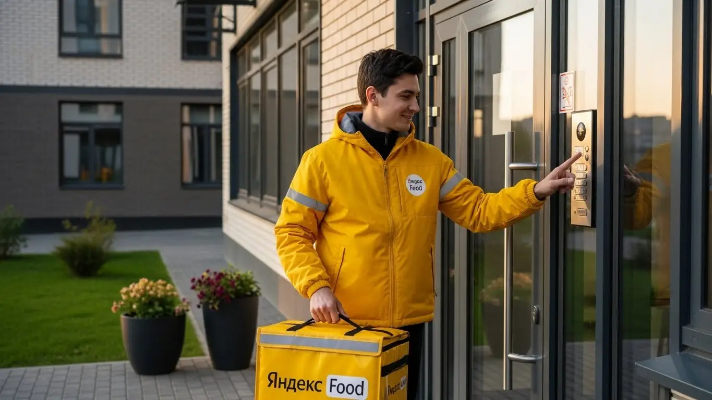

Доход курьера Яндекс Еда в Белгороде 2025-2026: разбор работы

- Работа курьером Яндекс Еды в Белгороде: для кого эта вакансия и что вы получите
- Сколько вы будете зарабатывать курьером в Белгороде: калькулятор дохода и разбор выплат
- Реальный заработок курьера в Белгороде: смены и месячный доход
- График работы и форматы занятости
- Требования к кандидату и документы
- Самозанятость, налоги и юридическая чистота
- Пошаговое оформление и первый выход на линию в Белгороде
- Пешком, на вело или на авто: что выгоднее в Белгороде
- Районы, маршруты и «топовые» зоны заказов в Белгороде
- Безопасность, страховка, штрафы и оплата простоя
- Плюсы и возможные минусы работы курьером в Белгороде
- Реальные истории и отзывы курьеров из Белгорода
- Частые вопросы о работе курьером в Белгороде
- Короткие ответы на главные вопросы
- Итоги и ваш следующий шаг
Все города
Думаешь взять желтую сумку и пойти катать заказы по Белгороду? Идея хорошая, но в голове наверняка крутится: а сколько реально останется в кармане после вычета бензина, налогов и возможных штрафов? Не «убьёшь» ли ты свою машину или велик на наших горках, стоя в пробках на Богданке в час пик? Забудь про рекламные обещания «дохода до 100 тысяч» — здесь только хардкорный опыт работы курьером Яндекс Еды именно в нашем городе, без прикрас.
Поверь, работа на линии в Белгороде — это не просто «взял заказ — отвез». Это знание, где в центре днём не припаркуешься, а где на Харьковской горе лучше срезать дворами, чтобы успеть вовремя. Это понимание, как работает приоритет, почему в дождь заказов больше, но и рисков тоже, и как не слить первый заработок на мелкие косяки, которые в Белгороде допускают 9 из 10 новичков, теряя и время, и деньги. Чтобы заранее оценить все условия, посмотреть калькулятор дохода и подать заявку, изучи подробную информацию про работу курьером Яндекс Еда в Белгороде.
В этом большом разборе я честно разложу по полочкам всё, что тебе нужно знать. Мы посчитаем реальный чистый доход пешего, вело- и автокурьера в Белгороде с учетом всех расходов. Разберём лучшие и худшие районы для работы, от «Спутника» до центра. Выясним, когда выходить на линию, чтобы поймать пиковые часы и повышенные коэффициенты. Я покажу на примерах, за что реально штрафуют и как этого избежать, и расскажу, стоит ли вообще игра свеч в 2025-2026 году.
Меня зовут Алексей. Я сам откатал не одну тысячу километров с коробом за спиной по белгородским улицам, а сейчас у меня свой небольшой таксопарк-партнер. Так что я вижу всю эту «кухню» и со стороны курьера, и со стороны агрегатора. Никакой рекламы, только факты и личный опыт. Готов? Тогда давай по порядку, сейчас всё разложу.
Прежде чем мы углубимся в детали, давай быстро пробежимся по ключевым моментам в формате короткого гида по статье.
Что ты точно узнаешь из этого разбора
В этой статье ты ТОЧНО узнаешь:
- Сколько на самом деле можно заработать в Белгороде за день и за месяц, если ты пеший, вело- или автокурьер?
- В каких районах Белгорода — от Харьковской горы до центра — самые выгодные заказы и как ловить пиковые часы?
- Что выгоднее для Белгорода: ходить пешком, крутить педали или работать на авто, особенно в дождь и снег?
- За что реально штрафуют и снижают рейтинг, и как работает бесплатная страховка, если что-то случится на смене?
- Как за один день оформить самозанятость, получить сумку и выйти на первый заказ?
А если тебе некогда читать всю статью — переходи сразу к заключению, где ты найдёшь короткие ответы на все эти вопросы и указания, в каких разделах искать подробности.
А чтобы сразу оценить главные цифры, вот наглядная инфографика.
Работа курьером в Белгороде: ключевые цифры
Доход в час
350–450 ₽
В часы пик с учетом бонусов и повышенного спроса
За смену 8 часов
2 800–3 600 ₽
Средний заработок за полный рабочий день в Белгороде
Чаевые от клиентов
+10-15%
Дополнительно к доходу, полностью остаются у курьера
Гибкий график
от 2 часов
Можно выбирать слоты и совмещать с учебой или другой работой
Работа курьером Яндекс Еды в Белгороде: для кого эта вакансия и что вы получите
Кому подойдёт эта работа в Белгороде
Давай начистоту: работа курьером в Яндекс Еде — это не для всех, но для многих это отличный вариант. В Белгороде эта вакансия идеально подходит, если ты студент и ищешь способ заработать, не отвлекаясь от учёбы. График гибкий, можно выходить на пару часов после пар и получать живые деньги. Также это хороший старт для тех, у кого нет опыта работы — здесь не требуют диплом или резюме, всему научат за пару часов.
Эта работа — настоящая находка, если тебе нужна подработка к основной зарплате. Можешь доставлять заказы по вечерам или в выходные, чтобы закрыть кредит или накопить на что-то. Для водителей-курьеров на своём авто это возможность превратить машину из пассива в актив, особенно если ты и так много времени проводишь за рулём.
И, конечно, это вакансия для всех, кому важна свобода: ты получаешь свободный график, сам решаешь, когда работать, и получаешь ежедневные выплаты на карту без задержек.
Главные преимущества для жителей районов Харьковская гора, Центр, Крейда
Одно из главных удобств — возможность работать прямо у себя в районе. Тебе не нужно тратить час-полтора на дорогу до «офиса». Живёшь, например, на Харьковской горе — можешь брать заказы Яндекс Еды или Яндекс Доставки там же. Это огромный спальный район с кучей многоэтажек, кафе и магазинов, заказов всегда хватает. Ты знаешь здесь каждый двор и подъезд, а значит, будешь доставлять быстрее и, как следствие, больше зарабатывать.
То же самое касается и других районов. Если ты из Центра, то твоя зона — это плотная застройка вокруг Гражданского проспекта и Соборной площади, где много ресторанов и офисов. Заказы короткие, их много, особенно в обеденное время. Жителям Крейды тоже удобно — район активно развивается, появляются новые заведения, и спрос на доставку постоянно растёт, а значит, и твой потенциальный доход. По сути, ты можешь выйти из дома, включить приложение «Яндекс Про» и сразу начать работать, не мотаясь через весь Белгород.
Кратко про доход и условия работы
Если говорить о деньгах, то в Белгороде цифры вполне реальные. Активный курьер за смену может заработать от 2000 до 4000 рублей. Конечно, всё зависит от того, как ты работаешь: пешком, на велосипеде или на авто, сколько часов на линии и в какое время. При полной занятости, если подходить к делу с умом, месячный доход может доходить до 70 000 – 85 000 рублей и выше.
Самое важное — условия работы максимально прозрачные и удобные для старта. Тебе не нужен опыт, чтобы начать. График ты составляешь сам через приложение, выбирая удобные слоты по 2, 4, 6 или больше часов. А главное — деньги приходят на карту каждый день. Большинство курьеров работают как самозанятые, что позволяет получать выплаты без задержек. Выполнил заказы, и уже к вечеру или на следующее утро можешь тратить заработанное.
Сколько вы будете зарабатывать курьером в Белгороде: калькулятор дохода и разбор выплат
Из чего складывается доход курьера
Твой заработок — это не какая-то фиксированная ставка, а сумма нескольких составляющих. Во-первых, это оплата за заказ — базовая стоимость за то, что ты забрал и отвёз посылку. Во-вторых, доплата за расстояние: чем дальше ехать от ресторана до клиента, тем больше денег ты получишь. Система всё считает автоматически по карте.
Кроме этого, есть повышающие коэффициенты. В часы пик (обед, ужин), в плохую погоду или в районах с высоким спросом (в приложении Яндекс Про они подсвечиваются фиолетовым) стоимость каждого заказа умножается на коэффициент. Так можно заработать в 1.5–2 раза больше. Также есть персональные бонусы за выполнение определённого числа заказов в неделю. Не забывай про чаевые — они полностью твои, сервис не берёт с них комиссию. И два важных момента: оплата простоя, если ты на плановом слоте, а заказов нет, и компенсация проезда на общественном транспорте, если заказ очень дальний.
Как пользоваться калькулятором дохода
Чтобы прикинуть свой возможный заработок, не нужно гадать. На сайте есть специальный калькулятор. Пользоваться им просто. Сначала выбираешь свой город — Белгород. Затем указываешь, как планируешь доставлять: как пеший курьер, на велосипеде или на своём автомобиле. От этого зависит средняя скорость и количество заказов, которые ты сможешь выполнить.
Дальше двигаешь ползунки: сколько часов в день и сколько дней в неделю ты готов выходить на линию. Калькулятор на основе средних данных по городу сразу покажет тебе примерный доход за день и возможную зарплату за месяц. Это не стопроцентная гарантия, а ориентир, но он помогает понять, на какие цифры можно рассчитывать при разной степени занятости. Поиграйся с ним, чтобы подобрать для себя оптимальный график.
Калькулятор дохода курьера в Белгороде
Примерный доход в месяц:
64 000 ₽
*Расчёт является примерным и основан на средней ставке 400 ₽/час для Белгорода. Реальный доход зависит от спроса, бонусов и вашего графика.
Чтобы увидеть актуальные условия и сразу подать заявку, загляни на страницу про работу курьером Яндекс Еда в твоём городе — там есть и калькулятор, и ответы на вопросы, и форма для анкеты.
Примеры расчёта для пешего, вело- и авто‑курьера в Белгороде
Давай разберём на конкретных примерах, сколько можно заработать в Белгороде.
- Пеший курьер. Допустим, ты студент и выходишь на 4 часа после учёбы в центре города, в районе Гражданского проспекта. Здесь много коротких заказов «от двери до двери». За такую смену можно спокойно сделать 8–10 заказов и заработать 1200–1600 рублей.
- Велокурьер. Ты работаешь в выходной день 6–8 часов, катаешься по спальным районам, например, между Харьковской горой и Савино. На велосипеде ты быстрее пешего, можешь брать заказы на большее расстояние. Твой доход за такой день может составить 2200–3000 рублей.
- Курьер на автомобиле. Ты работаешь на своей машине полный день, 8–10 часов. Берёшь крупные и дальние заказы, возишь по всему городу и в пригород, например, в Дубовое или Таврово. Особенно выгодно работать в дождь, когда коэффициенты максимальные. Твой дневной заработок может легко перевалить за 3500–5000 рублей за вычетом бензина.
Реальный заработок курьера в Белгороде: смены и месячный доход
Теперь о главном, что волнует всех, — о деньгах. Никто не идёт в курьеры Яндекс Еды ради романтики, все хотят понимать, сколько можно положить в карман. Цифры в рекламе часто выглядят заманчиво, но я расскажу, как обстоят дела в Белгороде на самом деле, без прикрас. Заработок — это не фиксированная ставка, а результат твоей стратегии, скорости и понимания, где и когда нужно быть.
Диапазон дохода для подработки и полной занятости
Сразу к цифрам. Если ты ищешь подработку на несколько часов в день, чтобы закрыть какие-то мелкие расходы или накопить на что-то, то расклад в Белгороде примерно такой. На коротких сменах по 2–4 часа пеший курьер может сделать 600–1200 ₽. Велокурьер за то же время заработает уже 800–1500 ₽, потому что успевает сделать больше заказов. Курьер на автомобиле на подработке может рассчитывать на 1200–2000 ₽, но из этой суммы нужно вычесть бензин.
При полной занятости, когда ты работаешь по 8–10 часов, цифры совсем другие. Пеший курьер, который хорошо знает центр, может стабильно делать 2000–3000 ₽ в день. Велосипедист, активно работающий между спальными районами, например, между Харьковской горой и центром, выходит на 2500–3800 ₽. Водитель-курьер на своем авто при полной загрузке в хороший день может заработать и 4000, и 5500 ₽. В месяц у самых активных автокурьеров в Белгороде выходит 80 000–100 000 ₽ «грязными», из которых самозанятый курьер заплатит небольшой налог.
Как район, время суток и погода влияют на доход
Твой заработок напрямую зависит от трёх вещей: где, когда и в какую погоду ты работаешь. В Белгороде самые «жирные» зоны — это, конечно, центр в районе Гражданского проспекта и Соборной площади, где много кафе и офисов. Также всегда есть спрос в крупных спальных районах, особенно на Харьковской горе. В обеденное время (с 12:00 до 14:00) и вечером (с 18:00 до 21:00) заказов больше всего, и приложение включает повышающие коэффициенты — карта в «Яндекс Про» окрашивается в яркие цвета. Пятница и выходные — это стабильный пик.
Отдельная история — погода. Дождь, снегопад или сильная жара — это твой лучший друг. Большинство курьеров сидят дома, а количество заказов от людей, не желающих выходить на улицу, резко растёт. В такие моменты коэффициенты могут взлетать до небес, и за один заказ можно получить как за три в обычное время. К тому же, в плохую погоду клиенты чаще оставляют щедрые чаевые и бонусы — из благодарности, что ты доставил им еду в тепле и комфорте.
Советы по увеличению заработка от опытных курьеров
Чтобы зарабатывать больше, не обязательно работать сутками. Важнее работать с умом. Во-первых, планируй свои смены. Заранее бронируй в приложении «Яндекс Про» плановые слоты на самое выгодное время — вечера и выходные. Так у тебя будет приоритет в получении заказов. Во-вторых, не гоняйся за одним заказом с высоким коэффициентом через весь город. Лучше выбери одну зону, например, в районе ТРЦ «МегаГРИНН» или «Сити Молл Белгородский», и работай в ней. Ты сэкономишь время и силы, а за счёт плотности заказов заработаешь больше.
Если у тебя есть машина, используй её для дальних доставок или в плохую погоду. Но если видишь, что в центре пробки, а заказы короткие, иногда выгоднее припарковаться и выполнить несколько доставок пешком. Велосипед — идеальный вариант для быстрой работы в спальных районах, где нет проблем с парковкой и можно срезать путь через дворы. Главное — постоянно анализировать карту спроса в приложении и быть там, где ты нужнее всего в данный момент.
Мой знакомый, водитель-курьер, в прошлую пятницу попал под сильный ливень. Он не поехал домой, а наоборот, вышел на линию в районе Харьковской горы. Вся карта в приложении была «фиолетовой» — это максимальный спрос. Заказы сыпались один за другим, в основном из ресторанов и продуктовых магазинов. За 6 часов работы он сделал почти 5000 ₽, из которых около 700 ₽ были чаевыми. Пока другие пережидали непогоду, он заработал как за два обычных дня.
Сравнение дохода в зависимости от формата занятости в Белгороде
| Параметр | Подработка (2–4 часа) | Полная занятость (8–10 часов) |
|---|---|---|
| Пеший курьер (в день) | 600 – 1200 ₽ | 2000 – 3000 ₽ |
| Велокурьер (в день) | 800 – 1500 ₽ | 2500 – 3800 ₽ |
| Автокурьер (в день, до вычета топлива) | 1200 – 2000 ₽ | 3500 – 5500 ₽ |
| Примерный месячный доход (при 22 рабочих днях) | 15 000 – 25 000 ₽ | 60 000 – 90 000 ₽ |
В итоге, твой реальный заработок в Белгороде — это не случайность, а результат твоего подхода. Он складывается из выбора транспорта, времени и места работы, а благодаря ежедневным выплатам ты видишь результат своего труда сразу. Мой совет: в первые недели пробуй разные районы и слоты, чтобы понять, что лучше всего подходит именно тебе, и не бойся плохой погоды — это время самых больших денег.
График работы и форматы занятости
Одно из главных преимуществ этой работы — гибкость. Это не просто слова из объявления, а реальный инструмент, который позволяет тебе встроить доставки в свою жизнь, а не наоборот. Ты сам решаешь, когда и сколько работать: выйти на пару часов после учёбы, отработать полную смену или кататься только по выходным. Никто не стоит над душой с графиком и планами.
Подработка после учёбы или основной работы
Для студентов и тех, у кого уже есть основная работа, курьерство — отличный вариант. Вот пара реальных примеров из Белгорода. Есть парень, студент БелГУ, живёт в общежитии рядом с университетом. Он заканчивает учиться в три-четыре часа дня, отдыхает и с 18:00 до 22:00 выходит на смену на велосипеде. Катается по своему району — центр, район университета, доставляет заказы Яндекс Еды в соседние дома. За 4 часа вечера спокойно делает 1000–1500 ₽. В месяц выходит 20-25 тысяч, что для студента очень неплохие деньги.
Другой пример — мужчина, работает в офисе с 9 до 18. Он выходит на линию на своей машине в пятницу вечером и на выходных. Его цель — быстрее закрыть кредит за машину. Он берёт большие заказы из гипермаркетов вроде «Ленты» или дальние доставки в пригородные посёлки, куда пешие курьеры не добираются. Такая подработка приносит ему дополнительные 15–20 тысяч в месяц, при этом не мешая основной деятельности.
Полная занятость: как выглядит типичный день курьера
Если ты рассматриваешь эту работу как основную, твой день будет более структурированным. Типичный день курьера на полной занятости в Белгороде выглядит так. Утром, часов в 10, он выходит на линию, обычно начиная с центра города, где уже есть первые заказы из кафе. С 12:00 до 15:00 — обеденный пик: много коротких и быстрых доставок еды в офисы.
После трёх часов дня наступает небольшое затишье. В это время можно взять перерыв, пообедать или переключиться на заказы «Яндекс Доставки» — отвезти документы или посылку. А примерно с 17:30 начинается вечерний пик, который длится до 21:00–22:00. Это самое прибыльное время: люди заказывают ужины, продукты на вечер. Заказы идут в основном в спальные районы — на ту же Харьковскую гору, Крейду, Новый-2. К 10-11 вечера поток заказов спадает, можно завершать смену и ехать домой, посмотрев в приложении итог дня.
Как планировать слоты и выходы через приложение «Яндекс Про»
Твой главный рабочий инструмент — это приложение «Яндекс Про». В нём ты не только видишь заказы, но и планируешь свои условия работы. Есть два типа смен: свободные и плановые. На свободной ты можешь выйти на линию в любой момент, когда захочешь. Плановые слоты нужно бронировать заранее, но они дают тебе приоритет при распределении заказов. Самые выгодные слоты (вечерние, выходные) разбирают быстро, так что лучше планировать свою неделю заранее.
В приложении есть карта спроса. Зоны, где заказов больше всего, подсвечиваются разными цветами, от жёлтого до фиолетового. Чем ярче цвет, тем выше коэффициент и, соответственно, твой заработок. Важно не только выбрать зону с высоким спросом, но и вовремя начать плановый слот. За опоздания система снижает твой рейтинг Активности, а это может повлиять на количество и качество заказов в будущем. Если понимаешь, что не успеваешь, лучше отмени слот заранее.
У меня был случай с новичком, который поначалу выходил только на свободные слоты, когда было настроение. Он жаловался, что заказов мало и заработок нестабильный. Я посоветовал ему попробовать забронировать несколько плановых вечерних слотов в его районе. Уже через неделю он сказал, что разница огромная: заказы идут почти без перерыва, а доход в час вырос почти вдвое.
В общем, гибкость графика — это твоё преимущество, но для стабильного дохода нужна дисциплина. Используй «Яндекс Про» для планирования, относись к плановым слотам серьёзно, и тогда сможешь управлять своим заработком. Мой совет: не игнорируй планирование, даже если начинаешь без опыта — 5 минут, потраченные на бронирование слотов, сэкономят тебе часы пустого ожидания на линии.
Требования к кандидату и документы
Многих новичков пугает этап с документами и требованиями. Кажется, что сейчас начнётся бюрократия, как в госучреждении. На деле всё наоборот: условия работы в Яндекс Еде продуманы так, чтобы ты как можно быстрее вышел на линию и начал зарабатывать, а не бегал по кабинетам. Требования к курьерам минимальные, и большинство нужных бумаг у тебя уже есть на руках.
Возраст, гражданство и базовые условия
Давай сразу по главному. Чтобы стать курьером-партнёром Яндекс Еды, тебе должно быть полных 18 лет. Это строгое правило, связанное с юридической ответственностью и оформлением самозанятости. По гражданству тоже всё просто: подойдёт паспорт РФ или страны, входящей в ЕАЭС (это Беларусь, Казахстан, Армения, Кыргызстан).
Что касается физической формы, от тебя не ждут олимпийских рекордов. Если ты пеший курьер, будь готов проходить за смену 10–15 километров. Для велокурьера важна базовая выносливость, чтобы крутить педали несколько часов с перерывами. Для водителя-курьера главное — уверенное и безопасное вождение. По сути, если у тебя нет серьёзных медицинских противопоказаний к умеренной физической активности, ты справишься.
Какие документы нужны для работы курьером
Список документов для работы курьером короткий, и собрать его можно за один вечер. Вот что тебе понадобится для оформления:
- Паспорт. Основной документ для подтверждения личности и возраста. Нужен будет его скан или фото.
- ИНН (Идентификационный номер налогоплательщика). Он нужен для регистрации в качестве самозанятого. Если ты не помнишь свой номер, его можно за пару минут бесплатно узнать на сайте Госуслуг или ФНС.
- Банковская карта. Подойдёт карта любого российского банка, оформленная на твоё имя. На неё будут приходить выплаты. Убедись, что знаешь её полные реквизиты (БИК, номер счёта), они понадобятся при регистрации в приложении «Яндекс Про».
- Медицинская книжка. На старте для доставки запечатанных заказов из ресторанов она чаще всего не требуется. Но если планируешь работать с доставкой продуктов из магазинов, её могут попросить. Лучше уточнить актуальные требования на момент регистрации, но не спеши её оформлять заранее, если у тебя её нет.
Можно ли работать с 16 лет и какие есть альтернативы
Частый вопрос от молодых ребят: берут ли в Яндекс Еду с 16 или 17 лет? Отвечаю честно: нет, официально партнёром сервиса можно стать только с 18 лет. Это связано с тем, что работа предполагает материальную ответственность и оформление в статусе самозанятого, который в полной мере доступен совершеннолетним. Никакие согласия от родителей здесь, к сожалению, не помогут.
Какие есть варианты для подростков? Прямой альтернативы в крупных сервисах доставки еды практически нет. Но можно рассмотреть другие виды подработки, которые официально доступны с 16 лет. Например, раздача листовок, работа промоутером, помощь в кофейнях или на летних верандах. Это, конечно, не так гибко, как курьерство, но тоже способ заработать первые деньги, пока не исполнится 18.
Был у меня парень, только из армии вернулся, 19 лет. Переживал, что оформление займёт неделю. Я ему говорю: «Давай проверим». Вечером он нашёл свой ИНН на сайте налоговой, сфотографировал паспорт и реквизиты карты. На следующее утро скачал приложение Яндекс Про, зарегистрировался как самозанятый за 5 минут, и к обеду его анкету уже одобрили. Вечером он выполнил свои первые три заказа в районе Харгоры. Вся процедура от «я ничего не знаю» до первых денег заняла меньше суток.
В общем, список документов и требований — это не барьер, а простая формальность, чтобы начать подработку. Главные условия для работы курьером — возраст от 18 лет и гражданство РФ или ЕАЭС. Советую заранее проверить ИНН и подготовить реквизиты карты, чтобы оформление прошло максимально быстро.
Самозанятость, налоги и юридическая чистота
Слова «самозанятость» и «налоги» многих напрягают. Сразу в голове всплывают какие-то декларации, очереди в налоговой и сложная бухгалтерия. Забудь об этом. В случае с работой курьером в Яндексе всё устроено максимально просто и прозрачно, специально для людей, которые хотят работать, а не возиться с бумажками.
Почему курьеры Яндекс Еды работают как самозанятые
Формат самозанятости (официально — налог на профессиональный доход или НПД) — это самый удобный способ легально сотрудничать с такой большой платформой, как Яндекс.
Во-первых, это даёт тебе официальный доход. Твои заработки — «белые», их видит государство. Это значит, что в будущем ты сможешь, например, взять кредит в банке, подтвердив свой доход справкой из приложения «Мой налог».
Во-вторых, это избавляет от любой бумажной волокиты. Тебе не нужен бухгалтер, ты не сдаёшь никаких отчётов и деклараций, ведь все операции автоматизированы.
В-третьих, это даёт тебе свободу. Ты не сотрудник в штате с жёстким графиком, а независимый партнёр. Ты сам решаешь, когда и сколько работать — это честная и прозрачная схема, выгодная и тебе, и сервису.
Как за 10 минут оформить самозанятость через «Мой налог»
Регистрация занимает реально не больше 10 минут и делается прямо с телефона. Вот простая пошаговая схема:
- Скачай приложение. Зайди в Google Play или App Store и найди официальное приложение от ФНС — «Мой налог».
- Начни регистрацию. Открой приложение и выбери способ «По паспорту РФ». Это самый быстрый вариант.
- Отсканируй паспорт. Наведи камеру телефона на главный разворот паспорта. Приложение само распознает все данные. Проверь, чтобы всё было верно.
- Сделай селфи. Приложение попросит тебя сфотографироваться. Это нужно для подтверждения личности, чтобы никто не зарегистрировался по твоим документам.
- Подтверди регистрацию. После проверки данных нажми кнопку «Подтверждаю». Всё, с этого момента ты официально являешься самозанятым.
Иногда зарегистрироваться можно прямо через партнёрское приложение, например, в самом «Яндекс Про». Там процесс ещё проще, так как приложение само проведёт тебя по всем шагам.
Сколько и как платить налоги
Здесь тоже всё элементарно. Ставка налога для самозанятого курьера при работе с юридическими лицами (а Яндекс — это юрлицо) составляет 6% от дохода. Никаких других скрытых платежей или взносов нет.
Процесс уплаты налога полностью автоматизирован. Яндекс сам передаёт данные о твоих доходах в налоговую службу. В начале каждого месяца (обычно до 12-го числа) в приложении «Мой налог» появляется сумма к оплате за предыдущий месяц, о чём приходит уведомление.
Всё, что нужно сделать — зайти в приложение и нажать кнопку «Оплатить» до 28-го числа. Это можно сделать любой банковской картой, ничего считать вручную не нужно. Работать официально и платить 6% — это гораздо безопаснее, чем получать «серый» кэш и постоянно переживать из-за вопросов от налоговой. Это даёт уверенность и стабильность.
Один мой знакомый водитель, лет под 50, всю жизнь работал по «серым» схемам. Когда я предложил ему поработать водителем-курьером через самозанятость, он отмахивался: «Да ну, эти налоги, обдерут как липку». Я сел с ним и показал на калькуляторе. С заработка в 50 000 рублей налог составил всего 3 000 рублей. Зато доход официальный. Когда ему через полгода понадобился потребительский кредит, он без проблем получил его в банке, предоставив справку о доходах из приложения «Мой налог». После этого все сомнения у него отпали.
Итог простой: не бойся самозанятости. Это современный и удобный инструмент, который делает твою подработку курьером легальной и прозрачной без лишних сложностей. Оформление занимает минуты, а уплата налога — один клик в месяц. Это малая цена за спокойствие и официальный статус.
Пошаговое оформление и первый выход на линию в Белгороде
Многие думают, что устроиться курьером в Яндекс Еду — это долго и муторно, с кучей бумажек и собеседований. На деле всё давно не так. Весь процесс максимально упрощён и проходит в основном онлайн, так что от момента, как ты решил попробовать, до первых выплат может пройти меньше суток. Главное — не тянуть и следовать простым шагам.
Шаг 1–2: анкета и онлайн‑обучение
Первым делом нужно заполнить короткую анкету на сайте сервиса. Ничего сложного там нет: ФИО, дата рождения, номер телефона, гражданство. Это занимает минут 10–15, не больше. После этого твои данные уходят на быструю проверку, которая обычно проходит автоматически. Никаких звонков с каверзными вопросами или поездок в офис на этом этапе не требуется.
Как только анкету одобрят, тебе откроется доступ к короткому онлайн-обучению. Это не нудные лекции, а несколько понятных видеороликов или слайдов. Там объясняют основные условия работы: как пользоваться приложением «Яндекс Про», как общаться с клиентами и сотрудниками ресторанов, что делать в нестандартных ситуациях. В конце будет небольшой тест из нескольких вопросов, чтобы убедиться, что ты всё понял. Пройти его легко, если смотрел внимательно.
Шаг 3: получение сумки и доступа к заказам в Белгороде
После успешного обучения остаётся последний шаг — получить фирменную термосумку или термокороб. Без них работать нельзя, так как они сохраняют температуру заказов. В Белгороде сумку и другую экипировку, если она нужна, можно забрать в партнёрских центрах. Точные адреса этих точек всегда можно посмотреть прямо в приложении «Яндекс Про», оно покажет ближайшие к тебе.
В некоторых случаях партнёры могут предложить доставку сумки на дом, что ещё удобнее. Как только ты получил сумку и активировал её в приложении Яндекс Про, твой профиль становится полностью активным. С этого момента ты видишь на карте доступные заказы и можешь выходить на линию.
Шаг 4: первый слот и первый доход
Теперь всё готово к работе. Это отличный вариант подработки без опыта. Заходишь в «Яндекс Про», открываешь расписание и выбираешь свой первый слот — это временной промежуток, в который ты планируешь доставлять заказы. Для начала советую взять короткий слот на 2–3 часа и выбрать район, который ты хорошо знаешь, например, свой собственный. Так будет спокойнее и проще сориентироваться.
Выходишь на линию, и приложение начинает предлагать тебе заказы. Принимаешь первый, идёшь в ресторан, забираешь пакет, относишь клиенту. Всё, первый заказ выполнен, и ты сразу видишь на своём балансе первые деньги, а ежедневные выплаты позволяют получать их на карту почти сразу. Многие ребята в Белгороде выполняют первый заказ уже в день регистрации или на следующее утро.
Как-то ко мне в парк пришёл парень, студент, назовём его Макс. Он заполнил анкету утром, пока пил кофе, к обеду прошёл обучение. После пар заехал в наш партнёрский офис на улице Щорса, забрал термосумку. Вечером того же дня он взял трёхчасовой слот у себя на Харьковской горе. Выполнил 6 заказов по району, и его доход за вечер составил чуть больше 1200 рублей. Говорит, был удивлён, насколько всё быстро и без лишней бюрократии.
В итоге, весь процесс оформления от анкеты до первого заработка занимает минимум времени. Система построена так, чтобы убрать все барьеры и позволить человеку начать работать и получать доход практически сразу. Мой совет: не откладывай получение сумки. Чем быстрее ты её заберёшь, тем быстрее сможешь выйти на линию и получить первые выплаты. А на первую смену выбери знакомый район, чтобы освоиться без стресса.
Пешком, на вело или на авто: что выгоднее в Белгороде
Выбор транспорта — одно из ключевых решений, которое напрямую влияет на твой доход и комфорт в работе. В Белгороде у каждого способа доставки есть свои плюсы и свои «зоны эффективности». Нет универсального ответа, что лучше, — всё зависит от твоих целей, физической подготовки и того, в каких районах города ты планируешь работать курьером.
Пеший курьер: для центра и плотной застройки в Белгороде
Работа пешим курьером — отличный вариант для старта, так как не требует никаких вложений. Этот формат идеален для центральной части Белгорода. В районах, прилегающих к Гражданскому проспекту, Соборной площади и Свято-Троицкому бульвару, сосредоточено огромное количество кафе и ресторанов. Расстояния между точками здесь небольшие, а вот с парковкой и пробками вечные проблемы.
Пеший курьер легко срежет путь через дворы или парк, не будет стоять в заторах и тратить время на поиск места для машины. Заказы из ресторанов и кафе в центре часто идут один за другим в радиусе 1–2 километров. Это позволяет выполнять их быстро и стабильно зарабатывать, не наматывая большой километраж. Плюс, это неплохая физическая нагрузка на свежем воздухе.
Велокурьер: быстрые доставки между спальными районами
Работа велокурьером — это золотая середина. Он быстрее пешехода и маневреннее автомобиля, особенно в густонаселённых жилых массивах. Для Белгорода это в первую очередь такие районы, как Харьковская гора и Крейда. Здесь большие расстояния между домами, и пешком их преодолевать долго, а на машине можно застрять на узких проездах.
На велосипеде ты легко объезжаешь пробки, не зависишь от расписания автобусов и не тратишь деньги на бензин. Это, по сути, оплачиваемый фитнес. Велокурьер может эффективно обслуживать заказы в радиусе 3–5 километров, что позволяет брать больше доставок в час и, соответственно, увеличить свой доход по сравнению с пешим курьером.
Водитель‑курьер: заказы по всему городу и пригороду Дубовое, Таврово
Работа водителем-курьером на своем авто открывает максимум возможностей для заработка. Во-первых, ты можешь брать самые дорогие заказы — на большие расстояния, из гипермаркетов (например, для Яндекс Доставки) или несколько заказов одновременно. Во-вторых, ты не зависишь от погоды: в дождь или мороз спрос на доставку резко возрастает, коэффициенты растут, а пеших и велокурьеров на линии становится меньше.
В Белгороде работа на авто особенно выгодна для доставки между удалёнными районами, например, с Харгоры в северную часть города. Но главный козырь — это пригород. Заказы в посёлки вроде Дубового, Таврово или Стрелецкого всегда хорошо оплачиваются. Пока другие курьеры работают в пределах одного района, ты можешь за один такой рейс заработать как за несколько коротких доставок по центру.
Был у меня в парке водитель, который поначалу пытался работать только в центре. Жаловался на пробки, парковку и низкую скорость. Я ему посоветовал сменить тактику: брать утренние и вечерние слоты и ориентироваться на заказы из крупных ТЦ на окраинах в пригород. Он начал работать по маршрутам из «Сити Молла» или «Ленты» в ближайшие посёлки. Его средний доход за заказ вырос почти вдвое, и он перестал терять время в городских заторах.
Сравнение форматов доставки в Белгороде
| Параметр | Пеший курьер | Велокурьер | Водитель-курьер |
|---|---|---|---|
| Средний радиус доставки | 1–2 км | 3–5 км | 5+ км, весь город и пригород |
| Потенциальный доход | Базовый | Средний | Высокий |
| Расходы | Минимальные (удобная обувь) | Низкие (обслуживание велосипеда) | Высокие (бензин, амортизация) |
| Лучшие районы в Белгороде | Центр (Гражданский пр-т, Соборная пл.) | Спальные районы (Харьковская гора, Крейда) | Весь город, дальние районы, пригород (Дубовое, Таврово) |
В общем, универсального рецепта нет. Каждый формат хорош для своих задач и районов Белгорода. Главное — трезво оценить свои возможности и выбрать те условия работы, которые подходят именно тебе. Мой совет: если есть машина, не игнорируй заказы в пригород и работай в плохую погоду — это самые «хлебные» часы для заработка. Если ты на велосипеде, освой один-два крупных спальных района и стань там лучшим. А если ходишь пешком — держись центра, там всегда есть работа для курьера.
Районы, маршруты и «топовые» зоны заказов в Белгороде
Чтобы не просто кататься по городу, а реально зарабатывать, нужно понимать, где и когда концентрируются заказы. Белгород в этом плане город понятный: есть ярко выраженный центр с деловой активностью и крупные спальные районы, которые «просыпаются» по вечерам и в выходные. Главное — не сидеть на месте и правильно читать карту спроса в приложении.
Где больше всего заказов: ТРЦ, бизнес-центры и туристические места
Самые «жирные» зоны, где почти всегда есть повышенный коэффициент, — это, конечно, центр и крупные торговые центры. В первую очередь смотри на ТРЦ «МегаГРИНН» и «Сити Молл Белгородский». Там сосредоточены десятки ресторанов и фуд-кортов, которые генерируют постоянный поток заказов для Яндекс Еды, особенно в обеденное время (с 12:00 до 15:00) и по вечерам.
Второй стабильный источник — деловой центр Белгорода. Это район Соборной площади, Гражданского проспекта и улицы Попова. Здесь много офисов, и сотрудники активно заказывают бизнес-ланчи. В будни с 11:00 до 16:00 тут всегда «фиолетовые» зоны на карте спроса в «Яндекс Про».
В выходные и праздничные дни центр тоже не пустует — люди гуляют, сидят в кафе, заказывают доставку в парки. Если хочешь максимальной загрузки, начинай смену именно в этих локациях.
Работа в своём районе: примеры для популярных жилых кварталов
Многие думают, что для хорошего дохода нужно обязательно ехать в центр. Это не всегда так. В Белгороде есть большие спальные районы, где можно отлично работать, не наматывая лишние километры. Самый очевидный пример — Харьковская гора. Это, по сути, город в городе с огромным количеством жителей, а значит, и заказов. Здесь полно пиццерий, суши-баров и магазинов, из которых люди постоянно заказывают доставку на дом.
Другой хороший вариант — район Крейды или окрестности БГТУ им. Шухова. Студенты — одни из самых активных пользователей сервисов доставки. Вечером, особенно во время сессии, заказы оттуда идут один за другим. Работая в своём районе, будь ты пеший курьер или на велосипеде, ты экономишь время и топливо, лучше знаешь все дворы и короткие пути, а значит, выполняешь заказы быстрее и зарабатываешь больше за час.
Как выбирать зоны и слоты в «Яндекс Про», чтобы не мотаться впустую
Приложение «Яндекс Про» — твой главный инструмент для планирования. Основное, на что нужно смотреть, — это карта спроса. Она подсвечивается разными цветами: от светло-зелёного (спрос низкий) до тёмно-фиолетового и бордового (спрос очень высокий, действуют максимальные коэффициенты). Не ленись открывать её перед началом смены и в процессе работы.
Планируй свои смены (слоты) заранее, выбирая зоны, где прогнозируется высокий спрос. Например, если берёшь утренний слот в будний день, логично выбрать центр. Если выходишь на линию вечером в пятницу — можно смело выбирать крупный спальный район. И всегда старайся выстраивать маршруты так, чтобы после выполнения заказа оказаться не на отшибе, а в зоне потенциального нового заказа. Пустые пробеги — главный враг твоего дохода.
Вот недавний пример из нашего парка-партнера. Курьер-новичок на своем авто в первый день просто катался по городу и за 8 часов привёз всего 1800 рублей, сжёг кучу бензина. Я ему показал карту спроса. На следующий день он начал смену в 11:30 в центре, у «Сити Молла», до 15:00 возил обеды по офисам с высоким коэффициентом. Потом сделал перерыв и в 18:00 переместился в район Харьковской горы, где до 22:00 развозил ужины по квартирам. Итоговый доход — 3500 рублей за те же 8 часов. Разница — в планировании.
В общем, ключ к стабильному заработку курьера в Белгороде — это знание карты города и умение пользоваться подсказками приложения. Не нужно бездумно гоняться за каждым заказом, лучше выбирать «рыбные» места и работать в них в пиковые часы. Мой совет: первые пару недель поэкспериментируй, поработай в разных районах в разное время, чтобы нащупать свой личный эффективный график работы, будь то подработка или полная занятость.
Безопасность, страховка, штрафы и оплата простоя
Работа курьера, как и любая работа «в полях», связана с определёнными рисками. Можно поскользнуться, попасть под дождь или столкнуться с недовольным клиентом. Важно понимать, что в Яндексе ты не брошен один на один с проблемами. Условия работы включают систему поддержки, страхования и чёткие правила, которые защищают и тебя, и твой заработок.
Бесплатная страховка на сменах и что она покрывает
Один из главных плюсов работы с Яндексом — это бесплатная страховка жизни и здоровья, которая автоматически действует, пока ты на активной смене. То есть с момента, как ты принял первый заказ, и до завершения последнего. Покрытие доходит до 2 миллионов рублей. Это не просто формальность, а реальная помощь в трудной ситуации.
Что она покрывает? Например, ты работаешь как велокурьер, неудачно упал и сломал руку. Страховка покроет расходы на лечение. Или, не дай бог, попал в ДТП на машине во время доставки. Это тоже страховой случай. Главное — сразу после происшествия связаться со службой поддержки через «Яндекс Про» и зафиксировать инцидент. Они дадут чёткую инструкцию, что делать дальше. Это даёт уверенность, что в случае чего ты не останешься без поддержки.
Правила безопасности на дороге и при доставке
Простые вещи, о которых часто забывают, но которые напрямую влияют и на безопасность, и на доход. Если ты пеший курьер — переходи дорогу только по переходу, в тёмное время носи светоотражающие элементы. Для велокурьеров — шлем и фонари обязательны, не гоняй по тротуарам, уважай пешеходов. Для курьеров на автомобиле — соблюдай ПДД, не отвлекайся на телефон за рулём, всегда пристёгивайся.
Отдельно скажу про плохую погоду. В дождь или снегопад заказов всегда больше, коэффициенты выше. Но и риски тоже. Не торопись, двигайся аккуратнее. С заказами тоже нужна аккуратность: пиццу неси горизонтально, супы и напитки ставь так, чтобы не пролились в термокоробе или термосумке. Если заказ оплачивается наличными, всегда имей при себе сдачу и пересчитывай деньги внимательно. Эти простые правила сберегут твои нервы, рейтинг и деньги.
Какие бывают штрафы и как их избежать
Да, в сервисе есть система штрафов, а точнее — снижение приоритета и рейтинга, что влияет на количество заказов. Но это не способ отобрать у тебя деньги, а механизм поддержания качества. Санкции применяют за реальные нарушения, которых легко избежать, если работать добросовестно.
Основные причины: грубость клиенту или сотруднику ресторана, порча заказа (например, привез помятую пиццу), регулярные сильные опоздания без уважительной причины, отмена уже принятого заказа. Чтобы этого не допускать, просто будь вежлив, аккуратен и пунктуален. Если понимаешь, что опаздываешь из-за пробки или долгого ожидания в ресторане, сообщи об этом в поддержку. В большинстве случаев они войдут в положение. Никто не будет наказывать за форс-мажор, наказывают за разгильдяйство.
Что такое оплата простоя и как она защищает ваш доход
Это одна из ключевых фишек, которая выгодно отличает условия работы в Яндексе. Оплата простоя — это гарантия твоего минимального дохода, даже если заказов временно нет. Работает это на плановых слотах. Ты выбираешь время и зону, выходишь на линию, и если сервис не может обеспечить тебя заказами, тебе всё равно начисляется минимальная плата за это время.
Например, ты взял слот с 10:00 до 14:00 в определённом районе с гарантированным доходом, скажем, 1200 рублей. За это время ты выполнил заказов только на 800 рублей. Сервис доплатит тебе 400 рублей, чтобы итоговая сумма была не меньше обещанной. Это мощная защита от ситуаций, когда ты вышел работать, а город «умер» и заказов нет. Ты не тратишь время впустую, твой выход на линию в любом случае будет оплачен.
Итак, безопасность и защита — это не пустые слова. Есть страховка, чёткие правила и финансовые гарантии вроде оплаты простоя. Главный совет здесь простой: работай добросовестно, соблюдай правила дорожного движения и стандарты сервиса. Тогда и проблем не будет, и доход будет стабильным.
Плюсы и возможные минусы работы курьером в Белгороде
Любая работа — это палка о двух концах. Работа курьером в сервисах Яндекса в Белгороде — не исключение. Здесь есть свои весомые плюсы, которые многих привлекают, но и минусы, о которых лучше знать на берегу. Идеальных вакансий не бывает, важно, чтобы плюсы для тебя лично перевешивали минусы. Кто-то готов мокнуть под дождём ради двойного тарифа и свободы, а для кого-то комфорт важнее. Поэтому смотри на этот раздел как на примерку.
Сильные стороны работы курьером в Белгороде
Начнём с хорошего. Причин, по которым парни и девчонки приходят в доставку, несколько, и они довольно весомые. Это не просто «деньги нужны», это целый набор преимуществ, который сложно найти в другой работе, особенно если у тебя нет опыта.
Во-первых, это гибкий график. Ты сам решаешь, когда выходить на линию и на сколько. Можно работать по 2–4 часа после основной работы или учёбы в БелГУ, а можно выходить на полную смену в 8–10 часов. Никто не стоит над душой с графиком отпусков. Планируешь всё через приложение «Яндекс Про».
Во-вторых, ежедневные выплаты. Это, пожалуй, один из главных козырей. Тебе не нужно ждать зарплаты месяц. Отработал смену — получил деньги на карту. Для многих это решающий фактор.
Кроме того, ты можешь работать рядом с домом. Живёшь на Харьковской горе — выбираешь этот район и доставляешь заказы Яндекс Еды или Яндекс Доставки. А ещё есть поддержка и страховка: на время смены твоя жизнь и здоровье застрахованы, а если возникнет проблема, всегда можно обратиться в круглосуточную поддержку. И, наконец, всё официально через самозанятость: легальный доход, низкий налог (6%) и никаких сложностей.
С какими сложностями чаще всего сталкиваются курьеры
Теперь о том, к чему нужно быть готовым. Романтики в работе курьера мало, это честный труд. Первая и главная сложность — физическая нагрузка. Если ты пеший курьер или на велосипеде, будь готов много ходить. Мой совет: вкладывайся в удобную обувь и не пытайся в первый же день ставить рекорды.
Вторая сложность — работа в плохую погоду. Белгородская погода бывает капризной. Решение простое — правильная экипировка. Непромокаемая куртка, термобельё зимой, термокороб и запас воды летом. С другой стороны, в плохую погоду всегда больше заказов и выше коэффициенты.
Третий момент — возможные простои. Бывают часы, когда заказов становится меньше. Что делать? Изучай карту спроса в приложении «Яндекс Про». Перемещайся в «фиолетовые» зоны, где спрос высокий. Обычно это центр города в обеденное время или крупные жилые массивы вроде Харьковской горы по вечерам.
И последнее — общение с разными клиентами. 99% людей адекватны и вежливы. Но иногда попадаются и недовольные. Главное правило курьера Яндекса — не вступать в конфликт. Сохраняй спокойствие, будь вежлив, а если ситуация сложная — сразу пиши в службу поддержки.
Кому такая работа подходит, а кому лучше поискать другой формат
Давай подведём итог. Работа курьером в Яндекс Еде в Белгороде идеально подойдёт, если ты студент и ищешь подработку. Если у тебя есть основная работа, но нужны дополнительные деньги. Если ты активный человек и не любишь сидеть на месте. Также это отличный вариант для водителей, которые хотят использовать свой автомобиль для заработка.
Эта работа для тех, кто ценит свободу и готов брать на себя ответственность за свой доход. Если ты самостоятельный, пунктуальный и можешь сам себя организовать, у тебя всё получится.
С другой стороны, если тебе нужна абсолютная стабильность и фиксированная зарплата, — курьерская работа может тебя разочаровать. Если ты не готов к физическим нагрузкам или работе на улице в любую погоду, лучше поискать что-то в помещении. И если для тебя важен карьерный рост в классическом понимании, то здесь этого нет. Это честный способ заработать деньги здесь и сейчас, но не корпоративная лестница.
Реальные истории и отзывы курьеров из Белгорода
Теория — это хорошо, но лучше всего об условиях работы говорят реальные люди, которые каждый день выходят на линию в Белгороде. Я собрал несколько коротких историй и отзывов от разных курьеров Яндекса — студента, автокурьера и велокурьера. Это поможет тебе лучше понять, как всё устроено изнутри.
У каждого своя стратегия. Кто-то берёт количеством часов, кто-то — работой в пиковые моменты. Эти примеры показывают, что в доставке нет единого рецепта успеха, но есть возможность найти свой собственный, удобный и выгодный формат. В конечном счёте, все эти истории об одном: если подходить к делу с умом, можно неплохо зарабатывать, сохраняя при этом свободу.
История студента БелГУ, который совмещает учёбу и доставку
Меня зовут Кирилл, я учусь на третьем курсе в БелГУ. Живу в общаге на Студенческой, поэтому искал подработку где-то поблизости. Выбрал доставку заказов Яндекс Еды на велосипеде, потому что это и деньги, и кардиотренировка. Мой график простой: выхожу на смены 4–5 раз в неделю после пар, обычно с 18:00 до 22:00. В это время как раз начинается вечерний пик заказов.
Как велокурьер я в основном катаюсь по своему району и центру. Забираю заказы из кафешек на Гражданском проспекте, везу их по ближайшим улицам. За вечер получается сделать 10–15 доставок. В выходные, если нет завалов по учёбе, могу выйти на более длинный слот. В среднем за неделю выходит около 6000–8000 рублей. Этих денег мне с головой хватает на личные расходы, чтобы не просить у родителей. Главный плюс для меня — я сам строю свой график и не пропускаю учёбу.
Опыт автокурьера, который выходит в пиковые часы
Я работаю системным администратором, график стандартный — с 9 до 18. Но машина часто простаивает, а ипотека сама себя не заплатит. Поэтому пару лет назад я решил попробовать себя в автодоставке Яндекса. Моя фишка — я не работаю полные смены, а выхожу только в самое «жирное» время. Это вечерние часы в будни, примерно с 19:00 до полуночи, и почти все выходные.
Будучи курьером на автомобиле, я не боюсь брать дальние заказы. Могу отвезти заказ из центра Белгорода в Дубовое, а оттуда забрать доставку в Таврово. Такие поездки оплачиваются гораздо лучше, чем короткие в центре. За 3–4 часа в будний вечер я спокойно делаю 1500–2000 рублей чистыми, уже за вычетом бензина. В выходной день могу и 4000–5000 рублей заработать. Для меня это идеальный формат подработки: я не устаю, как от полноценной второй работы, но получаю ощутимую прибавку к основному доходу.
Мнение пешего или вело‑курьера о работе в центре и спальниках
Я катаюсь на велосипеде уже больше года, и для себя выработала определённую тактику. В Белгороде есть два типа зон для работы. Центр, район Соборной площади и «Родины», — это муравейник. Плюсы: заказы из ресторанов для Яндекс Еды сыпятся один за другим, а адреса доставки обычно в паре кварталов. За час можно сделать 4–5 заказов. Минусы: много людей, приходится лавировать в толпе.
Спальные районы, например, Харьковская гора или район Крейды, — это совсем другая история. Плюсы: спокойно, мало пробок, клиенты часто оставляют хорошие чаевые. Минусы: расстояния между точками больше. Поэтому я комбинирую: в обеденный пик работаю в центре, а вечером, когда люди заказывают ужины домой, перемещаюсь в спальники. Приходится привыкать к разному темпу, но так получается зарабатывать стабильнее.
Частые вопросы о работе курьером в Белгороде
Собрал здесь ответы на то, о чём чаще всего спрашивают новички. Без воды, только по делу, чтобы у тебя не осталось сомнений и вопросов об условиях работы.
- Нужно ли оформлять самозанятость и как платить налоги?
Да, это основной и самый правильный формат работы. Не пугайся слова «самозанятость» — это твой официальный статус, оформление которого занимает 10 минут через приложение «Мой налог». Ты просто привязываешь карту, и налог (6% с доходов от Яндекса) списывается автоматически. Никакой бухгалтерии, отчётов и походов в налоговую. - Какой телефон и интернет нужны для работы курьером?
Для работы понадобится смартфон на базе Android. Приложение «Яндекс Про», через которое идут все заказы, на айфонах не работает. Телефон не обязательно должен быть флагманским, но важно, чтобы он уверенно держал зарядку, имел стабильный GPS и мобильный интернет. Мой совет: всегда выходи на смену с полностью заряженным телефоном и пауэрбанком в рюкзаке. - Что будет, если в смену мало заказов — как работает оплата простоя?
Это одно из ключевых преимуществ Яндекса. Если ты вышел на запланированный слот (смену), а заказов в твоей зоне действительно мало, сервис начисляет минимальную гарантированную оплату за час. Ты не будешь сидеть бесплатно в ожидании. Это своего рода страховка твоего времени и дохода. - Есть ли в Яндекс Еде штрафы и за что их могут применить?
Давай по-честному: система мотивации есть. Штрафы или, точнее, снижение приоритета, применяют за серьёзные нарушения: регулярные опоздания на слот, порчу заказа, грубость клиенту или отмену уже принятого заказа без веской причины. Но если ты работаешь нормально, вежливо общаешься и доставляешь заказы вовремя, с этим не столкнёшься. - Сколько реально можно заработать курьером в Белгороде и чем эта вакансия лучше других сервисов?
Реальная зарплата курьера в Белгороде при полной занятости на авто может доходить до 3500–4000 рублей в день, у пеших и велокурьеров — 2000–2800 рублей. Главное отличие от многих конкурентов — это технологии и масштаб. Приложение «Яндекс Про» грамотно строит маршруты, есть оплата простоя, бесплатная страховка на сменах и огромный поток заказов не только из ресторанов (Яндекс Еда), но и по тарифу Доставки. - Можно ли работать без опыта и что будет на обучении?
Опыт работы не требуется, это идеальный вариант для старта. Всё, что нужно знать, тебе расскажут на коротком онлайн-обучении. Это несколько видеороликов и небольшой тест прямо в приложении. Там объяснят, как пользоваться «Яндекс Про», как принимать и доставлять заказы, как общаться с клиентами и поддержкой. Весь процесс занимает от силы час. - Берут ли с 16–17 лет и какие есть ограничения по возрасту?
Здесь всё строго: на работу курьером в Яндекс Еду принимают только с 18 лет. Это связано с материальной ответственностью и требованиями законодательства. При регистрации нужно будет предоставить паспорт, поэтому обойти это правило не получится.
Короткие ответы на главные вопросы
Если нет времени читать всё, вот краткая шпаргалка с ответами на самые важные вопросы.
Быстрая шпаргалка: ответы на ключевые вопросы
Короткие ответы на ключевые вопросы
Сколько на самом деле можно заработать в Белгороде за день и за месяц, если ты пеший, вело- или автокурьер?
Активный автокурьер может заработать 3500–5500 ₽ в день, велокурьер — 2500–3800 ₽, пеший — 2000–3000 ₽. При полной занятости месячный доход может достигать 70 000 – 90 000 рублей, но всё зависит от количества часов, времени суток и погоды.
→ Подробнее читай в разделе «Реальный заработок курьера в Белгороде: смены и месячный доход».В каких районах Белгорода — от Харьковской горы до центра — самые выгодные заказы и как ловить пиковые часы?
Самые «жирные» зоны — это центр (Гражданский проспект, Соборная площадь) и крупные ТРЦ («МегаГРИНН», «Сити Молл») в обеденное время. Вечером и в выходные много заказов в спальных районах, особенно на Харьковской горе. Пиковые часы — с 12:00 до 15:00 и с 18:00 до 21:00.
→ Подробнее читай в разделе «Районы, маршруты и «топовые» зоны заказов в Белгороде».Что выгоднее для Белгорода: ходить пешком, крутить педали или работать на авто, особенно в дождь и снег?
Автомобиль выгоднее всего для дальних заказов, работы в пригороде (Дубовое, Таврово) и в плохую погоду, когда действуют высокие коэффициенты. Велосипед идеален для спальных районов (Харьковская гора, Крейда), а пеший курьер — для коротких доставок в загруженном центре.
→ Подробнее читай в разделе «Пешком, на вело или на авто: что выгоднее в Белгороде».За что реально штрафуют и снижают рейтинг, и как работает бесплатная страховка, если что-то случится на смене?
Снижение рейтинга применяют за серьёзные нарушения: грубость клиенту, порчу заказа или регулярные опоздания. Бесплатная страховка до 2 млн рублей автоматически действует на активной смене и покрывает травмы или ДТП во время выполнения заказа.
→ Подробнее читай в разделе «Безопасность, страховка, штрафы и оплата простоя».Как за один день оформить самозанятость, получить сумку и выйти на первый заказ?
Процесс занимает меньше суток: заполняешь анкету онлайн, проходишь короткое обучение с тестом и получаешь термосумку в партнёрском центре. Оформить самозанятость можно за 10 минут через приложение «Мой налог» по паспорту, после чего можно сразу выбирать слот и начинать работать.
→ Подробнее читай в разделе «Пошаговое оформление и первый выход на линию в Белгороде».
Для полного понимания темы рекомендую прочитать всю статью — там ты найдёшь примеры, сравнения и дельные советы из практики.
Итоги и ваш следующий шаг
Краткие выводы по работе курьером в Белгороде
Работа курьером в Яндекс Еде в Белгороде — это реальная возможность зарабатывать от 45 000 до 80 000 рублей в месяц при полной занятости, имея при этом абсолютно свободный график. Ты сам решаешь, когда и сколько работать. Главные плюсы — это прозрачная система оплаты с ежедневными выплатами, технологичное приложение «Яндекс Про», которое помогает зарабатывать больше, и важные гарантии, такие как оплата простоя и страховка на сменах.
Это отличный вариант как для подработки студентам, так и в качестве основного источника дохода для тех, кто ищет стабильную работу со свободным графиком. Если подходить к делу с умом, выбирать правильные зоны и слоты, то можно обеспечить себе достойный и стабильный заработок без начальника и жёсткого расписания.
Как стать курьером уже сегодня
Начать проще, чем кажется, и для этого не нужно никуда ехать и проходить долгие собеседования. Весь процесс занимает минимум времени и состоит из четырёх простых шагов:
- Заполнить онлайн-анкету. Это делается на сайте, займёт не больше 5–10 минут.
- Подготовить документы. Тебе понадобится паспорт, ИНН и реквизиты твоей банковской карты для выплат.
- Пройти онлайн-обучение. Короткий инструктаж и тест в приложении, чтобы ты понял основы работы.
- Выбрать первый слот. Сразу после активации аккаунта ты сможешь выбрать удобное время и район в приложении «Яндекс Про» и выйти на свою первую смену, чтобы получить первые выплаты.